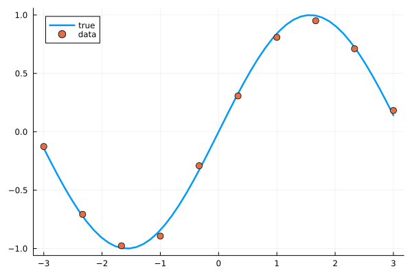
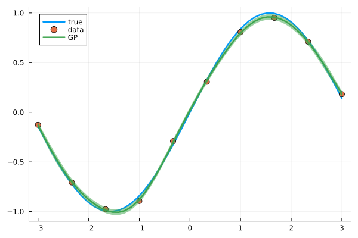
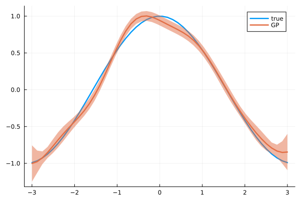

Derivative of a GP

You are seeing the HTML output generated by Documenter.jl and Literate.jl from the Julia source file. The corresponding notebook can be viewed in nbviewer.
The derivative of a GP is also a GP, as differentiation is a linear operators. In this example, we show how to use of the DerivativeGP and how to easily generate it from a known GP.
1D Example
Setup
using GPDiffEq
using Plots
using LinearAlgebra
using ZygoteThe toy model
We generate data for our model
σ_n = 3e-2
x = collect(range(-3, 3; length=10))
y = sin.(x) + σ_n * randn(length(x))10-element Vector{Float64}:
-0.11615971286034403
-0.7109204395563855
-1.0056147707205285
-0.8537223100081495
-0.3042662795478807
0.3440177497749917
0.8100175739469577
0.9865640385674507
0.6901956311856432
0.139329683595444which looks as follows
x_plot = collect(range(-3, 3; length=50))
plot(x_plot, sin.(x_plot); label="true", linewidth=2.5)
scatter!(x, y; label="data", markersize=5)
Define a GP
We'll use a simple GP with a ZeroMean and GaussianKernel, condition it on our data
kernel = GaussianKernel()
f = GP(kernel)
fx = f(x, σ_n^2)
f_post = posterior(fx, y)AbstractGPs.PosteriorGP{AbstractGPs.GP{AbstractGPs.ZeroMean{Float64}, KernelFunctions.SqExponentialKernel{Distances.Euclidean}}, NamedTuple{(:α, :C, :x, :δ), Tuple{Vector{Float64}, LinearAlgebra.Cholesky{Float64, Matrix{Float64}}, Vector{Float64}, Vector{Float64}}}}(AbstractGPs.GP{AbstractGPs.ZeroMean{Float64}, KernelFunctions.SqExponentialKernel{Distances.Euclidean}}(AbstractGPs.ZeroMean{Float64}(), Squared Exponential Kernel (metric = Distances.Euclidean(0.0))), (α = [1.4220221375814486, -2.4529207742718806, 1.5504353005463645, -1.5595671855951827, -0.2552815559811015, 1.5911025057781212, -1.6347086196642058, 1.859525883472236, 0.08070260501202162, -0.5120391583959933], C = LinearAlgebra.Cholesky{Float64, Matrix{Float64}}([1.0004498987955368 0.8003773141272065 0.4109274147582345 0.13527442343644172 0.028552654979465738 0.0038641816488032754 0.0003353117715403665 1.8656075767503327e-5 6.655367228157499e-7 1.5223130876467006e-8; 0.8007374029168073 0.6002467451228027 0.7860774360298166 0.5045287013510821 0.18739357913541801 0.042437043869301076 0.005993442252878988 0.0005339982776949294 3.0207225222272073e-5 1.0889719997540142e-6; 0.4111122905071873 0.800737402916808 0.4627320221952479 0.7532454836302187 0.5447501912681774 0.21694755843305388 0.05125299553180774 0.0074308448185643515 0.0006730546137433022 3.8471936975043666e-5; 0.1353352832366127 0.4111122905071873 0.800737402916808 0.4008401941766902 0.7284671118734966 0.5632271754070077 0.23365913510519642 0.05662183999427727 0.008341514642992735 0.0007632276968352209; 0.028565500784550377 0.13533528323661262 0.41111229050718734 0.8007374029168081 0.3708790752043206 0.7123614154783097 0.5712010291281239 0.242503787177178 0.059633063470279454 0.008867504227890321; 0.0038659201394728076 0.028565500784550366 0.1353352832366127 0.41111229050718745 0.8007374029168081 0.3568392984503521 0.7029993719303738 0.5740291337269634 0.24663628796656215 0.06112098575317586; 0.00033546262790251185 0.003865920139472804 0.028565500784550366 0.1353352832366127 0.41111229050718745 0.8007374029168081 0.3509441161144569 0.6982952225737459 0.5746810106111326 0.24824985985472933; 1.866446911352057e-5 0.00033546262790251185 0.003865920139472804 0.028565500784550366 0.1353352832366127 0.41111229050718734 0.800737402916808 0.3488620260888474 0.6963366393076491 0.5746726576516153; 6.658361469857302e-7 1.8664469113520537e-5 0.00033546262790251185 0.003865920139472804 0.028565500784550366 0.13533528323661262 0.4111122905071873 0.800737402916808 0.3482835414112316 0.6956902200185071; 1.522997974471263e-8 6.658361469857302e-7 1.866446911352057e-5 0.00033546262790251185 0.0038659201394728076 0.028565500784550377 0.1353352832366127 0.4111122905071873 0.8007374029168073 0.3481716098016506], 'U', 0), x = [-3.0, -2.3333333333333335, -1.6666666666666667, -1.0, -0.3333333333333333, 0.3333333333333333, 1.0, 1.6666666666666667, 2.3333333333333335, 3.0], δ = [-0.11615971286034403, -0.7109204395563855, -1.0056147707205285, -0.8537223100081495, -0.3042662795478807, 0.3440177497749917, 0.8100175739469577, 0.9865640385674507, 0.6901956311856432, 0.139329683595444]))and plot the posterior. Note that this GP completely untrained, no hyperparameters have been defined.
plot(x_plot, sin.(x_plot); label="true", linewidth=2.5)
scatter!(x, y; label="data", markersize=5)
plot!(
x_plot,
mean(f_post, x_plot);
ribbons=sqrt.(var(f_post, x_plot)),
label="GP",
linewidth=2.5,
)
Derivative of a GP
Now we can easily generate the derivate of this GP
df_post = differentiate(f_post)AbstractGPs.PosteriorGP{GPDiffEq.DerivativeGPModule.DerivativeGP{AbstractGPs.GP{AbstractGPs.ZeroMean{Float64}, KernelFunctions.SqExponentialKernel{Distances.Euclidean}}, AbstractGPs.ZeroMean{Float64}, GPDiffEq.DerivativeGPModule.DerivativeKernelCollection{KernelFunctions.SqExponentialKernel{Distances.Euclidean}}}, NamedTuple{(:α, :C, :x, :δ), Tuple{Vector{Float64}, LinearAlgebra.Cholesky{Float64, Matrix{Float64}}, Vector{Float64}, Vector{Float64}}}}(GPDiffEq.DerivativeGPModule.DerivativeGP{AbstractGPs.GP{AbstractGPs.ZeroMean{Float64}, KernelFunctions.SqExponentialKernel{Distances.Euclidean}}, AbstractGPs.ZeroMean{Float64}, GPDiffEq.DerivativeGPModule.DerivativeKernelCollection{KernelFunctions.SqExponentialKernel{Distances.Euclidean}}}(AbstractGPs.GP{AbstractGPs.ZeroMean{Float64}, KernelFunctions.SqExponentialKernel{Distances.Euclidean}}(AbstractGPs.ZeroMean{Float64}(), Squared Exponential Kernel (metric = Distances.Euclidean(0.0))), AbstractGPs.ZeroMean{Float64}(), GPDiffEq.DerivativeGPModule.DerivativeKernelCollection{KernelFunctions.SqExponentialKernel{Distances.Euclidean}}(GPDiffEq.DerivativeGPModule.Derivative10Kernel{KernelFunctions.SqExponentialKernel{Distances.Euclidean}}(Squared Exponential Kernel (metric = Distances.Euclidean(0.0))), GPDiffEq.DerivativeGPModule.Derivative01Kernel{KernelFunctions.SqExponentialKernel{Distances.Euclidean}}(Squared Exponential Kernel (metric = Distances.Euclidean(0.0))), GPDiffEq.DerivativeGPModule.Derivative11Kernel{KernelFunctions.SqExponentialKernel{Distances.Euclidean}}(Squared Exponential Kernel (metric = Distances.Euclidean(0.0))))), (α = [1.4220221375814486, -2.4529207742718806, 1.5504353005463645, -1.5595671855951827, -0.2552815559811015, 1.5911025057781212, -1.6347086196642058, 1.859525883472236, 0.08070260501202162, -0.5120391583959933], C = LinearAlgebra.Cholesky{Float64, Matrix{Float64}}([1.0004498987955368 0.8003773141272065 0.4109274147582345 0.13527442343644172 0.028552654979465738 0.0038641816488032754 0.0003353117715403665 1.8656075767503327e-5 6.655367228157499e-7 1.5223130876467006e-8; 0.8007374029168073 0.6002467451228027 0.7860774360298166 0.5045287013510821 0.18739357913541801 0.042437043869301076 0.005993442252878988 0.0005339982776949294 3.0207225222272073e-5 1.0889719997540142e-6; 0.4111122905071873 0.800737402916808 0.4627320221952479 0.7532454836302187 0.5447501912681774 0.21694755843305388 0.05125299553180774 0.0074308448185643515 0.0006730546137433022 3.8471936975043666e-5; 0.1353352832366127 0.4111122905071873 0.800737402916808 0.4008401941766902 0.7284671118734966 0.5632271754070077 0.23365913510519642 0.05662183999427727 0.008341514642992735 0.0007632276968352209; 0.028565500784550377 0.13533528323661262 0.41111229050718734 0.8007374029168081 0.3708790752043206 0.7123614154783097 0.5712010291281239 0.242503787177178 0.059633063470279454 0.008867504227890321; 0.0038659201394728076 0.028565500784550366 0.1353352832366127 0.41111229050718745 0.8007374029168081 0.3568392984503521 0.7029993719303738 0.5740291337269634 0.24663628796656215 0.06112098575317586; 0.00033546262790251185 0.003865920139472804 0.028565500784550366 0.1353352832366127 0.41111229050718745 0.8007374029168081 0.3509441161144569 0.6982952225737459 0.5746810106111326 0.24824985985472933; 1.866446911352057e-5 0.00033546262790251185 0.003865920139472804 0.028565500784550366 0.1353352832366127 0.41111229050718734 0.800737402916808 0.3488620260888474 0.6963366393076491 0.5746726576516153; 6.658361469857302e-7 1.8664469113520537e-5 0.00033546262790251185 0.003865920139472804 0.028565500784550366 0.13533528323661262 0.4111122905071873 0.800737402916808 0.3482835414112316 0.6956902200185071; 1.522997974471263e-8 6.658361469857302e-7 1.866446911352057e-5 0.00033546262790251185 0.0038659201394728076 0.028565500784550377 0.1353352832366127 0.4111122905071873 0.8007374029168073 0.3481716098016506], 'U', 0), x = [-3.0, -2.3333333333333335, -1.6666666666666667, -1.0, -0.3333333333333333, 0.3333333333333333, 1.0, 1.6666666666666667, 2.3333333333333335, 3.0], δ = [-0.11615971286034403, -0.7109204395563855, -1.0056147707205285, -0.8537223100081495, -0.3042662795478807, 0.3440177497749917, 0.8100175739469577, 0.9865640385674507, 0.6901956311856432, 0.139329683595444]))and plot the new posterior. As we know, the derivative of sin is cos, so we can check the differentiated GP.
plot(x_plot, cos.(x_plot); label="true", linewidth=2.5)
plot!(
x_plot,
mean(df_post, x_plot);
ribbons=sqrt.(var(df_post, x_plot)),
label="GP",
linewidth=2.5,
)
As we saw above, the original GP was slighly off from the true function. This is reflected and amplified in the derivative as well.
2D Example
We can do the same for a Multi-Input-Multi-Output GP, using the KernelFunctions.jl multi-output interface.
Setup
function fun(x)
return [-0.1 2.0; -2.0 -0.1] * (x .^ 3)
end
xrange = range(-1, 1; length=4)
x = collect.(Iterators.product(xrange, xrange))[:]
y = fun.(x)
# This is annoying UX, needs fix
y = ColVecs(reduce(hcat, y))
xMO, yMO = prepare_isotopic_multi_output_data(x, y)([([-1.0, -1.0], 1), ([-1.0, -1.0], 2), ([-0.3333333333333333, -1.0], 1), ([-0.3333333333333333, -1.0], 2), ([0.3333333333333333, -1.0], 1), ([0.3333333333333333, -1.0], 2), ([1.0, -1.0], 1), ([1.0, -1.0], 2), ([-1.0, -0.3333333333333333], 1), ([-1.0, -0.3333333333333333], 2), ([-0.3333333333333333, -0.3333333333333333], 1), ([-0.3333333333333333, -0.3333333333333333], 2), ([0.3333333333333333, -0.3333333333333333], 1), ([0.3333333333333333, -0.3333333333333333], 2), ([1.0, -0.3333333333333333], 1), ([1.0, -0.3333333333333333], 2), ([-1.0, 0.3333333333333333], 1), ([-1.0, 0.3333333333333333], 2), ([-0.3333333333333333, 0.3333333333333333], 1), ([-0.3333333333333333, 0.3333333333333333], 2), ([0.3333333333333333, 0.3333333333333333], 1), ([0.3333333333333333, 0.3333333333333333], 2), ([1.0, 0.3333333333333333], 1), ([1.0, 0.3333333333333333], 2), ([-1.0, 1.0], 1), ([-1.0, 1.0], 2), ([-0.3333333333333333, 1.0], 1), ([-0.3333333333333333, 1.0], 2), ([0.3333333333333333, 1.0], 1), ([0.3333333333333333, 1.0], 2), ([1.0, 1.0], 1), ([1.0, 1.0], 2)], [-1.9, 2.1, -1.9962962962962962, 0.17407407407407408, -2.0037037037037035, 0.025925925925925936, -2.1, -1.9, 0.025925925925925936, 2.0037037037037035, -0.07037037037037036, 0.07777777777777778, -0.07777777777777778, -0.07037037037037036, -0.17407407407407408, -1.9962962962962962, 0.17407407407407408, 1.9962962962962962, 0.07777777777777778, 0.07037037037037036, 0.07037037037037036, -0.07777777777777778, -0.025925925925925936, -2.0037037037037035, 2.1, 1.9, 2.0037037037037035, -0.025925925925925936, 1.9962962962962962, -0.17407407407407408, 1.9, -2.1])Defining a Multi-Output GP
σ_n = 3e-2
ker = GaussianKernel()
mker = IndependentMOKernel(ker)
f = GP(mker)
fx = f(xMO, σ_n)
f_post = posterior(fx, yMO)AbstractGPs.PosteriorGP{AbstractGPs.GP{AbstractGPs.ZeroMean{Float64}, KernelFunctions.IndependentMOKernel{KernelFunctions.SqExponentialKernel{Distances.Euclidean}}}, NamedTuple{(:α, :C, :x, :δ), Tuple{Vector{Float64}, LinearAlgebra.Cholesky{Float64, Matrix{Float64}}, KernelFunctions.MOInputIsotopicByFeatures{Vector{Float64}, Vector{Vector{Float64}}, Int64}, Vector{Float64}}}}(AbstractGPs.GP{AbstractGPs.ZeroMean{Float64}, KernelFunctions.IndependentMOKernel{KernelFunctions.SqExponentialKernel{Distances.Euclidean}}}(AbstractGPs.ZeroMean{Float64}(), Independent Multi-Output Kernel
Squared Exponential Kernel (metric = Distances.Euclidean(0.0))), (α = [-5.8928082251502145, 6.513103827797586, -3.584099275931157, -9.35081487416016, -2.6334738556861117, 9.66169353074103, -6.513103827797586, -5.8928082251502, 9.661693530741045, 2.633473855686111, 6.695563826004049, -7.400360018214983, 7.400360018214987, 6.695563826004023, 9.350814874160159, -3.584099275931162, -9.35081487416018, 3.584099275931163, -7.400360018214998, -6.695563826004059, -6.69556382600404, 7.400360018215012, -9.661693530741022, -2.6334738556861064, 6.513103827797607, 5.892808225150211, 2.633473855686087, -9.661693530741033, 3.584099275931181, 9.350814874160166, 5.892808225150194, -6.513103827797594], C = LinearAlgebra.Cholesky{Float64, Matrix{Float64}}([1.014889156509222 0.0 0.7889900072151692 0.0 0.4050809764499162 0.0 0.13334981694169176 0.0 0.7889900072151692 0.0 0.6317738093047882 0.0 0.32436348905351053 0.0 0.10677818609732201 0.0 0.4050809764499162 0.0 0.32436348905351053 0.0 0.1665337680692131 0.0 0.05482174868161305 0.0 0.13334981694169176 0.0 0.10677818609732201 0.0 0.05482174868161305 0.0 0.018046935245354306 0.0; 0.0 1.014889156509222 0.0 0.7889900072151692 0.0 0.4050809764499162 0.0 0.13334981694169176 0.0 0.7889900072151692 0.0 0.6317738093047882 0.0 0.32436348905351053 0.0 0.10677818609732201 0.0 0.4050809764499162 0.0 0.32436348905351053 0.0 0.1665337680692131 0.0 0.05482174868161305 0.0 0.13334981694169176 0.0 0.10677818609732201 0.0 0.05482174868161305 0.0 0.018046935245354306; 0.8007374029168081 0.0 0.638353169111431 0.0 0.7537090495760886 0.0 0.4792027866048276 0.0 0.029255211453805517 0.0 0.4735218609094165 0.0 0.603523026912453 0.0 0.38371559481644707 0.0 0.015020126381302113 0.0 0.24311422962706436 0.0 0.3098590537472211 0.0 0.19700615521853768 0.0 0.0049445202807131515 0.0 0.08003149962955057 0.0 0.10200342770237808 0.0 0.06485304485293843 0.0; 0.0 0.8007374029168081 0.0 0.638353169111431 0.0 0.7537090495760886 0.0 0.4792027866048276 0.0 0.029255211453805517 0.0 0.4735218609094165 0.0 0.603523026912453 0.0 0.38371559481644707 0.0 0.015020126381302113 0.0 0.24311422962706436 0.0 0.3098590537472211 0.0 0.19700615521853768 0.0 0.0049445202807131515 0.0 0.08003149962955057 0.0 0.10200342770237808 0.0 0.06485304485293843; 0.41111229050718745 0.0 0.8007374029168081 0.0 0.5457399299167064 0.0 0.7064545415860541 0.0 -0.022834635438786412 0.0 0.05197187078849021 0.0 0.3929768471725603 0.0 0.5656845749084011 0.0 -0.011723692741141238 0.0 0.02668324817096076 0.0 0.20176104072184708 0.0 0.2904321447306477 0.0 -0.003859357441598094 0.0 0.00878393818981833 0.0 0.0664183198184574 0.0 0.09560822547933998 0.0; 0.0 0.41111229050718745 0.0 0.8007374029168081 0.0 0.5457399299167064 0.0 0.7064545415860541 0.0 -0.022834635438786412 0.0 0.05197187078849021 0.0 0.3929768471725603 0.0 0.5656845749084011 0.0 -0.011723692741141238 0.0 0.02668324817096076 0.0 0.20176104072184708 0.0 0.2904321447306477 0.0 -0.003859357441598094 0.0 0.00878393818981833 0.0 0.0664183198184574 0.0 0.09560822547933998; 0.1353352832366127 0.0 0.41111229050718745 0.0 0.8007374029168081 0.0 0.5324514027629409 0.0 0.009895369273898258 0.0 -0.03508807251487256 0.0 0.05840229114034931 0.0 0.3812376696634479 0.0 0.005080451984368475 0.0 -0.01801481710299248 0.0 0.029984736062180908 0.0 0.19573394602530644 0.0 0.001672449168148829 0.0 -0.005930351466946973 0.0 0.009870764852940715 0.0 0.06443424250750197 0.0; 0.0 0.1353352832366127 0.0 0.41111229050718745 0.0 0.8007374029168081 0.0 0.5324514027629409 0.0 0.009895369273898258 0.0 -0.03508807251487256 0.0 0.05840229114034931 0.0 0.3812376696634479 0.0 0.005080451984368475 0.0 -0.01801481710299248 0.0 0.029984736062180908 0.0 0.19573394602530644 0.0 0.001672449168148829 0.0 -0.005930351466946973 0.0 0.009870764852940715 0.0 0.06443424250750197; 0.8007374029168081 0.0 0.6411803884299545 0.0 0.32919298780790557 0.0 0.10836802322189586 0.0 0.6371966432811077 0.0 0.45504817013829923 0.0 0.22902210410479182 0.0 0.07691094199644694 0.0 0.7538884099258905 0.0 0.5946924676608645 0.0 0.3029597669878345 0.0 0.10051184002618654 0.0 0.47968125882406926 0.0 0.3811444883597061 0.0 0.1949073904227263 0.0 0.06441878806315202 0.0; 0.0 0.8007374029168081 0.0 0.6411803884299545 0.0 0.32919298780790557 0.0 0.10836802322189586 0.0 0.6371966432811077 0.0 0.45504817013829923 0.0 0.22902210410479182 0.0 0.07691094199644694 0.0 0.7538884099258905 0.0 0.5946924676608645 0.0 0.3029597669878345 0.0 0.10051184002618654 0.0 0.47968125882406926 0.0 0.3811444883597061 0.0 0.1949073904227263 0.0 0.06441878806315202; 0.6411803884299545 0.0 0.8007374029168081 0.0 0.6411803884299546 0.0 0.32919298780790557 0.0 0.8007374029168081 0.0 0.44230963790666084 0.0 0.42377799504496516 0.0 0.2508060486284582 0.0 0.08112077982886903 0.0 0.47039567497804097 0.0 0.5470118197185491 0.0 0.33304094025599956 0.0 0.05558529003964323 0.0 0.2976472790049039 0.0 0.3492110211657883 0.0 0.21451190561079217 0.0; 0.0 0.6411803884299545 0.0 0.8007374029168081 0.0 0.6411803884299546 0.0 0.32919298780790557 0.0 0.8007374029168081 0.0 0.44230963790666084 0.0 0.42377799504496516 0.0 0.2508060486284582 0.0 0.08112077982886903 0.0 0.47039567497804097 0.0 0.5470118197185491 0.0 0.33304094025599956 0.0 0.05558529003964323 0.0 0.2976472790049039 0.0 0.3492110211657883 0.0 0.21451190561079217; 0.32919298780790557 0.0 0.6411803884299546 0.0 0.8007374029168081 0.0 0.6411803884299545 0.0 0.41111229050718745 0.0 0.8007374029168081 0.0 0.41311952226736914 0.0 0.4019533510165103 0.0 -0.03386275401160267 0.0 0.1071574419958899 0.0 0.4296049806156669 0.0 0.5199008460782375 0.0 -0.022315815490579434 0.0 0.07195199031174866 0.0 0.2722343270350894 0.0 0.3321199544764706 0.0; 0.0 0.32919298780790557 0.0 0.6411803884299546 0.0 0.8007374029168081 0.0 0.6411803884299545 0.0 0.41111229050718745 0.0 0.8007374029168081 0.0 0.41311952226736914 0.0 0.4019533510165103 0.0 -0.03386275401160267 0.0 0.1071574419958899 0.0 0.4296049806156669 0.0 0.5199008460782375 0.0 -0.022315815490579434 0.0 0.07195199031174866 0.0 0.2722343270350894 0.0 0.3321199544764706; 0.10836802322189586 0.0 0.32919298780790557 0.0 0.6411803884299545 0.0 0.8007374029168081 0.0 0.1353352832366127 0.0 0.41111229050718745 0.0 0.8007374029168081 0.0 0.4190872209790082 0.0 -0.0016006107088383766 0.0 -0.032794568896116726 0.0 0.10918989220569206 0.0 0.4298392443456105 0.0 -0.0019483106495607988 0.0 -0.02074252762586557 0.0 0.07364514992067908 0.0 0.2705860750398662 0.0; 0.0 0.10836802322189586 0.0 0.32919298780790557 0.0 0.6411803884299545 0.0 0.8007374029168081 0.0 0.1353352832366127 0.0 0.41111229050718745 0.0 0.8007374029168081 0.0 0.4190872209790082 0.0 -0.0016006107088383766 0.0 -0.032794568896116726 0.0 0.10918989220569206 0.0 0.4298392443456105 0.0 -0.0019483106495607988 0.0 -0.02074252762586557 0.0 0.07364514992067908 0.0 0.2705860750398662; 0.41111229050718745 0.0 0.32919298780790557 0.0 0.1690133154060661 0.0 0.05563799827784281 0.0 0.8007374029168081 0.0 0.6411803884299546 0.0 0.3291929878079056 0.0 0.10836802322189586 0.0 0.5379990508853109 0.0 0.3404879596823185 0.0 0.15457657624560323 0.0 0.052196237857934494 0.0 0.705759352510439 0.0 0.5348989037365243 0.0 0.260691806049154 0.0 0.0865998313011726 0.0; 0.0 0.41111229050718745 0.0 0.32919298780790557 0.0 0.1690133154060661 0.0 0.05563799827784281 0.0 0.8007374029168081 0.0 0.6411803884299546 0.0 0.3291929878079056 0.0 0.10836802322189586 0.0 0.5379990508853109 0.0 0.3404879596823185 0.0 0.15457657624560323 0.0 0.052196237857934494 0.0 0.705759352510439 0.0 0.5348989037365243 0.0 0.260691806049154 0.0 0.0865998313011726; 0.32919298780790557 0.0 0.41111229050718745 0.0 0.3291929878079056 0.0 0.1690133154060661 0.0 0.6411803884299546 0.0 0.8007374029168081 0.0 0.6411803884299546 0.0 0.3291929878079056 0.0 0.8007374029168081 0.0 0.40152932023731086 0.0 0.33367284175717443 0.0 0.16285201972111996 0.0 0.11822932516806653 0.0 0.4709783692748893 0.0 0.5013551391465453 0.0 0.27585966647214877 0.0; 0.0 0.32919298780790557 0.0 0.41111229050718745 0.0 0.3291929878079056 0.0 0.1690133154060661 0.0 0.6411803884299546 0.0 0.8007374029168081 0.0 0.6411803884299546 0.0 0.3291929878079056 0.0 0.8007374029168081 0.0 0.40152932023731086 0.0 0.33367284175717443 0.0 0.16285201972111996 0.0 0.11822932516806653 0.0 0.4709783692748893 0.0 0.5013551391465453 0.0 0.27585966647214877; 0.1690133154060661 0.0 0.3291929878079056 0.0 0.41111229050718745 0.0 0.32919298780790557 0.0 0.3291929878079056 0.0 0.6411803884299546 0.0 0.8007374029168081 0.0 0.6411803884299546 0.0 0.41111229050718745 0.0 0.8007374029168081 0.0 0.37673115407242885 0.0 0.3205856109699964 0.0 -0.022009953131252497 0.0 0.13334622519081904 0.0 0.4344021412058904 0.0 0.48401072301776465 0.0; 0.0 0.1690133154060661 0.0 0.3291929878079056 0.0 0.41111229050718745 0.0 0.32919298780790557 0.0 0.3291929878079056 0.0 0.6411803884299546 0.0 0.8007374029168081 0.0 0.6411803884299546 0.0 0.41111229050718745 0.0 0.8007374029168081 0.0 0.37673115407242885 0.0 0.3205856109699964 0.0 -0.022009953131252497 0.0 0.13334622519081904 0.0 0.4344021412058904 0.0 0.48401072301776465; 0.05563799827784281 0.0 0.1690133154060661 0.0 0.32919298780790557 0.0 0.41111229050718745 0.0 0.10836802322189586 0.0 0.3291929878079056 0.0 0.6411803884299546 0.0 0.8007374029168081 0.0 0.1353352832366127 0.0 0.41111229050718745 0.0 0.8007374029168081 0.0 0.39676519154119294 0.0 -0.006162753591414901 0.0 -0.017936114578073818 0.0 0.1342310245363721 0.0 0.4412849285786032 0.0; 0.0 0.05563799827784281 0.0 0.1690133154060661 0.0 0.32919298780790557 0.0 0.41111229050718745 0.0 0.10836802322189586 0.0 0.3291929878079056 0.0 0.6411803884299546 0.0 0.8007374029168081 0.0 0.1353352832366127 0.0 0.41111229050718745 0.0 0.8007374029168081 0.0 0.39676519154119294 0.0 -0.006162753591414901 0.0 -0.017936114578073818 0.0 0.1342310245363721 0.0 0.4412849285786032; 0.1353352832366127 0.0 0.10836802322189586 0.0 0.05563799827784281 0.0 0.01831563888873418 0.0 0.41111229050718745 0.0 0.32919298780790557 0.0 0.1690133154060661 0.0 0.05563799827784281 0.0 0.8007374029168081 0.0 0.6411803884299545 0.0 0.32919298780790557 0.0 0.10836802322189586 0.0 0.5156483352917743 0.0 0.3063527358955129 0.0 0.1240755016198685 0.0 0.0341764817090061 0.0; 0.0 0.1353352832366127 0.0 0.10836802322189586 0.0 0.05563799827784281 0.0 0.01831563888873418 0.0 0.41111229050718745 0.0 0.32919298780790557 0.0 0.1690133154060661 0.0 0.05563799827784281 0.0 0.8007374029168081 0.0 0.6411803884299545 0.0 0.32919298780790557 0.0 0.10836802322189586 0.0 0.5156483352917743 0.0 0.3063527358955129 0.0 0.1240755016198685 0.0 0.0341764817090061; 0.10836802322189586 0.0 0.1353352832366127 0.0 0.10836802322189586 0.0 0.05563799827784281 0.0 0.32919298780790557 0.0 0.41111229050718745 0.0 0.3291929878079056 0.0 0.1690133154060661 0.0 0.6411803884299545 0.0 0.8007374029168081 0.0 0.6411803884299546 0.0 0.32919298780790557 0.0 0.8007374029168081 0.0 0.39078933713856145 0.0 0.3091310273421473 0.0 0.13692611875683675 0.0; 0.0 0.10836802322189586 0.0 0.1353352832366127 0.0 0.10836802322189586 0.0 0.05563799827784281 0.0 0.32919298780790557 0.0 0.41111229050718745 0.0 0.3291929878079056 0.0 0.1690133154060661 0.0 0.6411803884299545 0.0 0.8007374029168081 0.0 0.6411803884299546 0.0 0.32919298780790557 0.0 0.8007374029168081 0.0 0.39078933713856145 0.0 0.3091310273421473 0.0 0.13692611875683675; 0.05563799827784281 0.0 0.10836802322189586 0.0 0.1353352832366127 0.0 0.10836802322189586 0.0 0.1690133154060661 0.0 0.3291929878079056 0.0 0.41111229050718745 0.0 0.32919298780790557 0.0 0.32919298780790557 0.0 0.6411803884299546 0.0 0.8007374029168081 0.0 0.6411803884299545 0.0 0.41111229050718745 0.0 0.8007374029168081 0.0 0.3682547795263878 0.0 0.3025125771536608 0.0; 0.0 0.05563799827784281 0.0 0.10836802322189586 0.0 0.1353352832366127 0.0 0.10836802322189586 0.0 0.1690133154060661 0.0 0.3291929878079056 0.0 0.41111229050718745 0.0 0.32919298780790557 0.0 0.32919298780790557 0.0 0.6411803884299546 0.0 0.8007374029168081 0.0 0.6411803884299545 0.0 0.41111229050718745 0.0 0.8007374029168081 0.0 0.3682547795263878 0.0 0.3025125771536608; 0.01831563888873418 0.0 0.05563799827784281 0.0 0.10836802322189586 0.0 0.1353352832366127 0.0 0.05563799827784281 0.0 0.1690133154060661 0.0 0.32919298780790557 0.0 0.41111229050718745 0.0 0.10836802322189586 0.0 0.32919298780790557 0.0 0.6411803884299545 0.0 0.8007374029168081 0.0 0.1353352832366127 0.0 0.41111229050718745 0.0 0.8007374029168081 0.0 0.3930172419286605 0.0; 0.0 0.01831563888873418 0.0 0.05563799827784281 0.0 0.10836802322189586 0.0 0.1353352832366127 0.0 0.05563799827784281 0.0 0.1690133154060661 0.0 0.32919298780790557 0.0 0.41111229050718745 0.0 0.10836802322189586 0.0 0.32919298780790557 0.0 0.6411803884299545 0.0 0.8007374029168081 0.0 0.1353352832366127 0.0 0.41111229050718745 0.0 0.8007374029168081 0.0 0.3930172419286605], 'U', 0), x = [([-1.0, -1.0], 1), ([-1.0, -1.0], 2), ([-0.3333333333333333, -1.0], 1), ([-0.3333333333333333, -1.0], 2), ([0.3333333333333333, -1.0], 1), ([0.3333333333333333, -1.0], 2), ([1.0, -1.0], 1), ([1.0, -1.0], 2), ([-1.0, -0.3333333333333333], 1), ([-1.0, -0.3333333333333333], 2), ([-0.3333333333333333, -0.3333333333333333], 1), ([-0.3333333333333333, -0.3333333333333333], 2), ([0.3333333333333333, -0.3333333333333333], 1), ([0.3333333333333333, -0.3333333333333333], 2), ([1.0, -0.3333333333333333], 1), ([1.0, -0.3333333333333333], 2), ([-1.0, 0.3333333333333333], 1), ([-1.0, 0.3333333333333333], 2), ([-0.3333333333333333, 0.3333333333333333], 1), ([-0.3333333333333333, 0.3333333333333333], 2), ([0.3333333333333333, 0.3333333333333333], 1), ([0.3333333333333333, 0.3333333333333333], 2), ([1.0, 0.3333333333333333], 1), ([1.0, 0.3333333333333333], 2), ([-1.0, 1.0], 1), ([-1.0, 1.0], 2), ([-0.3333333333333333, 1.0], 1), ([-0.3333333333333333, 1.0], 2), ([0.3333333333333333, 1.0], 1), ([0.3333333333333333, 1.0], 2), ([1.0, 1.0], 1), ([1.0, 1.0], 2)], δ = [-1.9, 2.1, -1.9962962962962962, 0.17407407407407408, -2.0037037037037035, 0.025925925925925936, -2.1, -1.9, 0.025925925925925936, 2.0037037037037035, -0.07037037037037036, 0.07777777777777778, -0.07777777777777778, -0.07037037037037036, -0.17407407407407408, -1.9962962962962962, 0.17407407407407408, 1.9962962962962962, 0.07777777777777778, 0.07037037037037036, 0.07037037037037036, -0.07777777777777778, -0.025925925925925936, -2.0037037037037035, 2.1, 1.9, 2.0037037037037035, -0.025925925925925936, 1.9962962962962962, -0.17407407407407408, 1.9, -2.1]))which looks as follows
sf = maximum(norm.(y)) * 2
quiver(
getindex.(xMO.x, 1),
getindex.(xMO.x, 2);
quiver=(y.X[1, :] ./ sf, y.X[2, :] ./ sf),
label="data",
markersize=5,
)Derivative of a Multi-Output GP
As above, the derivate is obtained very easily using our provided function:
df_post = differentiate(f_post)AbstractGPs.PosteriorGP{GPDiffEq.DerivativeGPModule.DerivativeGP{AbstractGPs.GP{AbstractGPs.ZeroMean{Float64}, KernelFunctions.IndependentMOKernel{KernelFunctions.SqExponentialKernel{Distances.Euclidean}}}, AbstractGPs.ZeroMean{Float64}, GPDiffEq.DerivativeGPModule.DerivativeKernelCollection{KernelFunctions.IndependentMOKernel{KernelFunctions.SqExponentialKernel{Distances.Euclidean}}}}, NamedTuple{(:α, :C, :x, :δ), Tuple{Vector{Float64}, LinearAlgebra.Cholesky{Float64, Matrix{Float64}}, KernelFunctions.MOInputIsotopicByFeatures{Vector{Float64}, Vector{Vector{Float64}}, Int64}, Vector{Float64}}}}(GPDiffEq.DerivativeGPModule.DerivativeGP{AbstractGPs.GP{AbstractGPs.ZeroMean{Float64}, KernelFunctions.IndependentMOKernel{KernelFunctions.SqExponentialKernel{Distances.Euclidean}}}, AbstractGPs.ZeroMean{Float64}, GPDiffEq.DerivativeGPModule.DerivativeKernelCollection{KernelFunctions.IndependentMOKernel{KernelFunctions.SqExponentialKernel{Distances.Euclidean}}}}(AbstractGPs.GP{AbstractGPs.ZeroMean{Float64}, KernelFunctions.IndependentMOKernel{KernelFunctions.SqExponentialKernel{Distances.Euclidean}}}(AbstractGPs.ZeroMean{Float64}(), Independent Multi-Output Kernel
Squared Exponential Kernel (metric = Distances.Euclidean(0.0))), AbstractGPs.ZeroMean{Float64}(), GPDiffEq.DerivativeGPModule.DerivativeKernelCollection{KernelFunctions.IndependentMOKernel{KernelFunctions.SqExponentialKernel{Distances.Euclidean}}}(GPDiffEq.DerivativeGPModule.Derivative10Kernel{KernelFunctions.IndependentMOKernel{KernelFunctions.SqExponentialKernel{Distances.Euclidean}}}(Independent Multi-Output Kernel
Squared Exponential Kernel (metric = Distances.Euclidean(0.0))), GPDiffEq.DerivativeGPModule.Derivative01Kernel{KernelFunctions.IndependentMOKernel{KernelFunctions.SqExponentialKernel{Distances.Euclidean}}}(Independent Multi-Output Kernel
Squared Exponential Kernel (metric = Distances.Euclidean(0.0))), GPDiffEq.DerivativeGPModule.Derivative11Kernel{KernelFunctions.IndependentMOKernel{KernelFunctions.SqExponentialKernel{Distances.Euclidean}}}(Independent Multi-Output Kernel
Squared Exponential Kernel (metric = Distances.Euclidean(0.0))))), (α = [-5.8928082251502145, 6.513103827797586, -3.584099275931157, -9.35081487416016, -2.6334738556861117, 9.66169353074103, -6.513103827797586, -5.8928082251502, 9.661693530741045, 2.633473855686111, 6.695563826004049, -7.400360018214983, 7.400360018214987, 6.695563826004023, 9.350814874160159, -3.584099275931162, -9.35081487416018, 3.584099275931163, -7.400360018214998, -6.695563826004059, -6.69556382600404, 7.400360018215012, -9.661693530741022, -2.6334738556861064, 6.513103827797607, 5.892808225150211, 2.633473855686087, -9.661693530741033, 3.584099275931181, 9.350814874160166, 5.892808225150194, -6.513103827797594], C = LinearAlgebra.Cholesky{Float64, Matrix{Float64}}([1.014889156509222 0.0 0.7889900072151692 0.0 0.4050809764499162 0.0 0.13334981694169176 0.0 0.7889900072151692 0.0 0.6317738093047882 0.0 0.32436348905351053 0.0 0.10677818609732201 0.0 0.4050809764499162 0.0 0.32436348905351053 0.0 0.1665337680692131 0.0 0.05482174868161305 0.0 0.13334981694169176 0.0 0.10677818609732201 0.0 0.05482174868161305 0.0 0.018046935245354306 0.0; 0.0 1.014889156509222 0.0 0.7889900072151692 0.0 0.4050809764499162 0.0 0.13334981694169176 0.0 0.7889900072151692 0.0 0.6317738093047882 0.0 0.32436348905351053 0.0 0.10677818609732201 0.0 0.4050809764499162 0.0 0.32436348905351053 0.0 0.1665337680692131 0.0 0.05482174868161305 0.0 0.13334981694169176 0.0 0.10677818609732201 0.0 0.05482174868161305 0.0 0.018046935245354306; 0.8007374029168081 0.0 0.638353169111431 0.0 0.7537090495760886 0.0 0.4792027866048276 0.0 0.029255211453805517 0.0 0.4735218609094165 0.0 0.603523026912453 0.0 0.38371559481644707 0.0 0.015020126381302113 0.0 0.24311422962706436 0.0 0.3098590537472211 0.0 0.19700615521853768 0.0 0.0049445202807131515 0.0 0.08003149962955057 0.0 0.10200342770237808 0.0 0.06485304485293843 0.0; 0.0 0.8007374029168081 0.0 0.638353169111431 0.0 0.7537090495760886 0.0 0.4792027866048276 0.0 0.029255211453805517 0.0 0.4735218609094165 0.0 0.603523026912453 0.0 0.38371559481644707 0.0 0.015020126381302113 0.0 0.24311422962706436 0.0 0.3098590537472211 0.0 0.19700615521853768 0.0 0.0049445202807131515 0.0 0.08003149962955057 0.0 0.10200342770237808 0.0 0.06485304485293843; 0.41111229050718745 0.0 0.8007374029168081 0.0 0.5457399299167064 0.0 0.7064545415860541 0.0 -0.022834635438786412 0.0 0.05197187078849021 0.0 0.3929768471725603 0.0 0.5656845749084011 0.0 -0.011723692741141238 0.0 0.02668324817096076 0.0 0.20176104072184708 0.0 0.2904321447306477 0.0 -0.003859357441598094 0.0 0.00878393818981833 0.0 0.0664183198184574 0.0 0.09560822547933998 0.0; 0.0 0.41111229050718745 0.0 0.8007374029168081 0.0 0.5457399299167064 0.0 0.7064545415860541 0.0 -0.022834635438786412 0.0 0.05197187078849021 0.0 0.3929768471725603 0.0 0.5656845749084011 0.0 -0.011723692741141238 0.0 0.02668324817096076 0.0 0.20176104072184708 0.0 0.2904321447306477 0.0 -0.003859357441598094 0.0 0.00878393818981833 0.0 0.0664183198184574 0.0 0.09560822547933998; 0.1353352832366127 0.0 0.41111229050718745 0.0 0.8007374029168081 0.0 0.5324514027629409 0.0 0.009895369273898258 0.0 -0.03508807251487256 0.0 0.05840229114034931 0.0 0.3812376696634479 0.0 0.005080451984368475 0.0 -0.01801481710299248 0.0 0.029984736062180908 0.0 0.19573394602530644 0.0 0.001672449168148829 0.0 -0.005930351466946973 0.0 0.009870764852940715 0.0 0.06443424250750197 0.0; 0.0 0.1353352832366127 0.0 0.41111229050718745 0.0 0.8007374029168081 0.0 0.5324514027629409 0.0 0.009895369273898258 0.0 -0.03508807251487256 0.0 0.05840229114034931 0.0 0.3812376696634479 0.0 0.005080451984368475 0.0 -0.01801481710299248 0.0 0.029984736062180908 0.0 0.19573394602530644 0.0 0.001672449168148829 0.0 -0.005930351466946973 0.0 0.009870764852940715 0.0 0.06443424250750197; 0.8007374029168081 0.0 0.6411803884299545 0.0 0.32919298780790557 0.0 0.10836802322189586 0.0 0.6371966432811077 0.0 0.45504817013829923 0.0 0.22902210410479182 0.0 0.07691094199644694 0.0 0.7538884099258905 0.0 0.5946924676608645 0.0 0.3029597669878345 0.0 0.10051184002618654 0.0 0.47968125882406926 0.0 0.3811444883597061 0.0 0.1949073904227263 0.0 0.06441878806315202 0.0; 0.0 0.8007374029168081 0.0 0.6411803884299545 0.0 0.32919298780790557 0.0 0.10836802322189586 0.0 0.6371966432811077 0.0 0.45504817013829923 0.0 0.22902210410479182 0.0 0.07691094199644694 0.0 0.7538884099258905 0.0 0.5946924676608645 0.0 0.3029597669878345 0.0 0.10051184002618654 0.0 0.47968125882406926 0.0 0.3811444883597061 0.0 0.1949073904227263 0.0 0.06441878806315202; 0.6411803884299545 0.0 0.8007374029168081 0.0 0.6411803884299546 0.0 0.32919298780790557 0.0 0.8007374029168081 0.0 0.44230963790666084 0.0 0.42377799504496516 0.0 0.2508060486284582 0.0 0.08112077982886903 0.0 0.47039567497804097 0.0 0.5470118197185491 0.0 0.33304094025599956 0.0 0.05558529003964323 0.0 0.2976472790049039 0.0 0.3492110211657883 0.0 0.21451190561079217 0.0; 0.0 0.6411803884299545 0.0 0.8007374029168081 0.0 0.6411803884299546 0.0 0.32919298780790557 0.0 0.8007374029168081 0.0 0.44230963790666084 0.0 0.42377799504496516 0.0 0.2508060486284582 0.0 0.08112077982886903 0.0 0.47039567497804097 0.0 0.5470118197185491 0.0 0.33304094025599956 0.0 0.05558529003964323 0.0 0.2976472790049039 0.0 0.3492110211657883 0.0 0.21451190561079217; 0.32919298780790557 0.0 0.6411803884299546 0.0 0.8007374029168081 0.0 0.6411803884299545 0.0 0.41111229050718745 0.0 0.8007374029168081 0.0 0.41311952226736914 0.0 0.4019533510165103 0.0 -0.03386275401160267 0.0 0.1071574419958899 0.0 0.4296049806156669 0.0 0.5199008460782375 0.0 -0.022315815490579434 0.0 0.07195199031174866 0.0 0.2722343270350894 0.0 0.3321199544764706 0.0; 0.0 0.32919298780790557 0.0 0.6411803884299546 0.0 0.8007374029168081 0.0 0.6411803884299545 0.0 0.41111229050718745 0.0 0.8007374029168081 0.0 0.41311952226736914 0.0 0.4019533510165103 0.0 -0.03386275401160267 0.0 0.1071574419958899 0.0 0.4296049806156669 0.0 0.5199008460782375 0.0 -0.022315815490579434 0.0 0.07195199031174866 0.0 0.2722343270350894 0.0 0.3321199544764706; 0.10836802322189586 0.0 0.32919298780790557 0.0 0.6411803884299545 0.0 0.8007374029168081 0.0 0.1353352832366127 0.0 0.41111229050718745 0.0 0.8007374029168081 0.0 0.4190872209790082 0.0 -0.0016006107088383766 0.0 -0.032794568896116726 0.0 0.10918989220569206 0.0 0.4298392443456105 0.0 -0.0019483106495607988 0.0 -0.02074252762586557 0.0 0.07364514992067908 0.0 0.2705860750398662 0.0; 0.0 0.10836802322189586 0.0 0.32919298780790557 0.0 0.6411803884299545 0.0 0.8007374029168081 0.0 0.1353352832366127 0.0 0.41111229050718745 0.0 0.8007374029168081 0.0 0.4190872209790082 0.0 -0.0016006107088383766 0.0 -0.032794568896116726 0.0 0.10918989220569206 0.0 0.4298392443456105 0.0 -0.0019483106495607988 0.0 -0.02074252762586557 0.0 0.07364514992067908 0.0 0.2705860750398662; 0.41111229050718745 0.0 0.32919298780790557 0.0 0.1690133154060661 0.0 0.05563799827784281 0.0 0.8007374029168081 0.0 0.6411803884299546 0.0 0.3291929878079056 0.0 0.10836802322189586 0.0 0.5379990508853109 0.0 0.3404879596823185 0.0 0.15457657624560323 0.0 0.052196237857934494 0.0 0.705759352510439 0.0 0.5348989037365243 0.0 0.260691806049154 0.0 0.0865998313011726 0.0; 0.0 0.41111229050718745 0.0 0.32919298780790557 0.0 0.1690133154060661 0.0 0.05563799827784281 0.0 0.8007374029168081 0.0 0.6411803884299546 0.0 0.3291929878079056 0.0 0.10836802322189586 0.0 0.5379990508853109 0.0 0.3404879596823185 0.0 0.15457657624560323 0.0 0.052196237857934494 0.0 0.705759352510439 0.0 0.5348989037365243 0.0 0.260691806049154 0.0 0.0865998313011726; 0.32919298780790557 0.0 0.41111229050718745 0.0 0.3291929878079056 0.0 0.1690133154060661 0.0 0.6411803884299546 0.0 0.8007374029168081 0.0 0.6411803884299546 0.0 0.3291929878079056 0.0 0.8007374029168081 0.0 0.40152932023731086 0.0 0.33367284175717443 0.0 0.16285201972111996 0.0 0.11822932516806653 0.0 0.4709783692748893 0.0 0.5013551391465453 0.0 0.27585966647214877 0.0; 0.0 0.32919298780790557 0.0 0.41111229050718745 0.0 0.3291929878079056 0.0 0.1690133154060661 0.0 0.6411803884299546 0.0 0.8007374029168081 0.0 0.6411803884299546 0.0 0.3291929878079056 0.0 0.8007374029168081 0.0 0.40152932023731086 0.0 0.33367284175717443 0.0 0.16285201972111996 0.0 0.11822932516806653 0.0 0.4709783692748893 0.0 0.5013551391465453 0.0 0.27585966647214877; 0.1690133154060661 0.0 0.3291929878079056 0.0 0.41111229050718745 0.0 0.32919298780790557 0.0 0.3291929878079056 0.0 0.6411803884299546 0.0 0.8007374029168081 0.0 0.6411803884299546 0.0 0.41111229050718745 0.0 0.8007374029168081 0.0 0.37673115407242885 0.0 0.3205856109699964 0.0 -0.022009953131252497 0.0 0.13334622519081904 0.0 0.4344021412058904 0.0 0.48401072301776465 0.0; 0.0 0.1690133154060661 0.0 0.3291929878079056 0.0 0.41111229050718745 0.0 0.32919298780790557 0.0 0.3291929878079056 0.0 0.6411803884299546 0.0 0.8007374029168081 0.0 0.6411803884299546 0.0 0.41111229050718745 0.0 0.8007374029168081 0.0 0.37673115407242885 0.0 0.3205856109699964 0.0 -0.022009953131252497 0.0 0.13334622519081904 0.0 0.4344021412058904 0.0 0.48401072301776465; 0.05563799827784281 0.0 0.1690133154060661 0.0 0.32919298780790557 0.0 0.41111229050718745 0.0 0.10836802322189586 0.0 0.3291929878079056 0.0 0.6411803884299546 0.0 0.8007374029168081 0.0 0.1353352832366127 0.0 0.41111229050718745 0.0 0.8007374029168081 0.0 0.39676519154119294 0.0 -0.006162753591414901 0.0 -0.017936114578073818 0.0 0.1342310245363721 0.0 0.4412849285786032 0.0; 0.0 0.05563799827784281 0.0 0.1690133154060661 0.0 0.32919298780790557 0.0 0.41111229050718745 0.0 0.10836802322189586 0.0 0.3291929878079056 0.0 0.6411803884299546 0.0 0.8007374029168081 0.0 0.1353352832366127 0.0 0.41111229050718745 0.0 0.8007374029168081 0.0 0.39676519154119294 0.0 -0.006162753591414901 0.0 -0.017936114578073818 0.0 0.1342310245363721 0.0 0.4412849285786032; 0.1353352832366127 0.0 0.10836802322189586 0.0 0.05563799827784281 0.0 0.01831563888873418 0.0 0.41111229050718745 0.0 0.32919298780790557 0.0 0.1690133154060661 0.0 0.05563799827784281 0.0 0.8007374029168081 0.0 0.6411803884299545 0.0 0.32919298780790557 0.0 0.10836802322189586 0.0 0.5156483352917743 0.0 0.3063527358955129 0.0 0.1240755016198685 0.0 0.0341764817090061 0.0; 0.0 0.1353352832366127 0.0 0.10836802322189586 0.0 0.05563799827784281 0.0 0.01831563888873418 0.0 0.41111229050718745 0.0 0.32919298780790557 0.0 0.1690133154060661 0.0 0.05563799827784281 0.0 0.8007374029168081 0.0 0.6411803884299545 0.0 0.32919298780790557 0.0 0.10836802322189586 0.0 0.5156483352917743 0.0 0.3063527358955129 0.0 0.1240755016198685 0.0 0.0341764817090061; 0.10836802322189586 0.0 0.1353352832366127 0.0 0.10836802322189586 0.0 0.05563799827784281 0.0 0.32919298780790557 0.0 0.41111229050718745 0.0 0.3291929878079056 0.0 0.1690133154060661 0.0 0.6411803884299545 0.0 0.8007374029168081 0.0 0.6411803884299546 0.0 0.32919298780790557 0.0 0.8007374029168081 0.0 0.39078933713856145 0.0 0.3091310273421473 0.0 0.13692611875683675 0.0; 0.0 0.10836802322189586 0.0 0.1353352832366127 0.0 0.10836802322189586 0.0 0.05563799827784281 0.0 0.32919298780790557 0.0 0.41111229050718745 0.0 0.3291929878079056 0.0 0.1690133154060661 0.0 0.6411803884299545 0.0 0.8007374029168081 0.0 0.6411803884299546 0.0 0.32919298780790557 0.0 0.8007374029168081 0.0 0.39078933713856145 0.0 0.3091310273421473 0.0 0.13692611875683675; 0.05563799827784281 0.0 0.10836802322189586 0.0 0.1353352832366127 0.0 0.10836802322189586 0.0 0.1690133154060661 0.0 0.3291929878079056 0.0 0.41111229050718745 0.0 0.32919298780790557 0.0 0.32919298780790557 0.0 0.6411803884299546 0.0 0.8007374029168081 0.0 0.6411803884299545 0.0 0.41111229050718745 0.0 0.8007374029168081 0.0 0.3682547795263878 0.0 0.3025125771536608 0.0; 0.0 0.05563799827784281 0.0 0.10836802322189586 0.0 0.1353352832366127 0.0 0.10836802322189586 0.0 0.1690133154060661 0.0 0.3291929878079056 0.0 0.41111229050718745 0.0 0.32919298780790557 0.0 0.32919298780790557 0.0 0.6411803884299546 0.0 0.8007374029168081 0.0 0.6411803884299545 0.0 0.41111229050718745 0.0 0.8007374029168081 0.0 0.3682547795263878 0.0 0.3025125771536608; 0.01831563888873418 0.0 0.05563799827784281 0.0 0.10836802322189586 0.0 0.1353352832366127 0.0 0.05563799827784281 0.0 0.1690133154060661 0.0 0.32919298780790557 0.0 0.41111229050718745 0.0 0.10836802322189586 0.0 0.32919298780790557 0.0 0.6411803884299545 0.0 0.8007374029168081 0.0 0.1353352832366127 0.0 0.41111229050718745 0.0 0.8007374029168081 0.0 0.3930172419286605 0.0; 0.0 0.01831563888873418 0.0 0.05563799827784281 0.0 0.10836802322189586 0.0 0.1353352832366127 0.0 0.05563799827784281 0.0 0.1690133154060661 0.0 0.32919298780790557 0.0 0.41111229050718745 0.0 0.10836802322189586 0.0 0.32919298780790557 0.0 0.6411803884299545 0.0 0.8007374029168081 0.0 0.1353352832366127 0.0 0.41111229050718745 0.0 0.8007374029168081 0.0 0.3930172419286605], 'U', 0), x = [([-1.0, -1.0], 1), ([-1.0, -1.0], 2), ([-0.3333333333333333, -1.0], 1), ([-0.3333333333333333, -1.0], 2), ([0.3333333333333333, -1.0], 1), ([0.3333333333333333, -1.0], 2), ([1.0, -1.0], 1), ([1.0, -1.0], 2), ([-1.0, -0.3333333333333333], 1), ([-1.0, -0.3333333333333333], 2), ([-0.3333333333333333, -0.3333333333333333], 1), ([-0.3333333333333333, -0.3333333333333333], 2), ([0.3333333333333333, -0.3333333333333333], 1), ([0.3333333333333333, -0.3333333333333333], 2), ([1.0, -0.3333333333333333], 1), ([1.0, -0.3333333333333333], 2), ([-1.0, 0.3333333333333333], 1), ([-1.0, 0.3333333333333333], 2), ([-0.3333333333333333, 0.3333333333333333], 1), ([-0.3333333333333333, 0.3333333333333333], 2), ([0.3333333333333333, 0.3333333333333333], 1), ([0.3333333333333333, 0.3333333333333333], 2), ([1.0, 0.3333333333333333], 1), ([1.0, 0.3333333333333333], 2), ([-1.0, 1.0], 1), ([-1.0, 1.0], 2), ([-0.3333333333333333, 1.0], 1), ([-0.3333333333333333, 1.0], 2), ([0.3333333333333333, 1.0], 1), ([0.3333333333333333, 1.0], 2), ([1.0, 1.0], 1), ([1.0, 1.0], 2)], δ = [-1.9, 2.1, -1.9962962962962962, 0.17407407407407408, -2.0037037037037035, 0.025925925925925936, -2.1, -1.9, 0.025925925925925936, 2.0037037037037035, -0.07037037037037036, 0.07777777777777778, -0.07777777777777778, -0.07037037037037036, -0.17407407407407408, -1.9962962962962962, 0.17407407407407408, 1.9962962962962962, 0.07777777777777778, 0.07037037037037036, 0.07037037037037036, -0.07777777777777778, -0.025925925925925936, -2.0037037037037035, 2.1, 1.9, 2.0037037037037035, -0.025925925925925936, 1.9962962962962962, -0.17407407407407408, 1.9, -2.1]))Visualizing the derivatives
To demonstrate, we we show the contour plots for each component of our function and the corresponding (scaled) gradient separately. In the first row of the following grid we show the $f_1$ and in the second row $f_2$. The right column showing the GP also includes the location of the input data points for the GP.
As our GP is untrained, it smoothes the data a little too strongly, but we can see that the gradients are correctly perpendicular to the contours.
xprange = range(-1, 1; length=14)
xprange2 = range(-1, 1.0; length=10)
xp = vcat.(xprange', xprange2)
p = plot(; layout=(2, 2), size=(800, 800))
for comp in 1:2
nlevels = 30
narrow = 6
spl = (comp - 1) * 2
fungrad(xval) = only(gradient(x -> fun(x)[comp], xval))
gpgrad(xval) = only(mean(df_post, [(xval, comp)]))
zreal = getindex.(fun.(xp), comp)
contour!(
p,
xprange,
xprange2,
zreal;
levels=nlevels,
linewidth=2,
label="",
subplot=spl + 1,
title="real",
)
xpMO = [[(xval, comp)] for xval in xp]
zgp = only.(mean.(Ref(f_post), xpMO))
contour!(
p,
xprange,
xprange2,
zgp;
levels=nlevels,
linewidth=2,
label="",
subplot=spl + 2,
title="gp",
)
scatter!(
p,
getindex.(x, 1),
getindex.(x, 2);
label="data",
markersize=3,
subplot=spl + 2,
legend=:none,
)
xgrange = range(-0.8, 0.8; length=narrow)
xg = collect.(Iterators.product(xgrange, xgrange))[:]
dzreal = fungrad.(xg)
sf = maximum(norm.(dzreal)) * 3
quiver!(
p,
getindex.(xg, 1),
getindex.(xg, 2);
quiver=(getindex.(dzreal, 1) ./ sf, getindex.(dzreal, 2) ./ sf),
label="data",
linewidth=2.5,
subplot=spl + 1,
)
dzgp = gpgrad.(xg)
quiver!(
p,
getindex.(xg, 1),
getindex.(xg, 2);
quiver=(getindex.(dzgp, 1) ./ sf, getindex.(dzgp, 2) ./ sf),
label="data",
linewidth=2.5,
subplot=spl + 2,
)
end
pThis page was generated using Literate.jl.